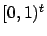
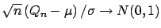
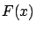
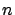

Supongamos que queremos estimar la siguiente integral:
Este es un caso bastante general, pues casi cualquier región de
integración se puede llevar fácilmente al cubo unitario de dimensión
con algún cambio de variable.
La primer idea sería utilizar métodos numéricos de integración
clásicos como una aproximación de Riemman. El problema es que la
mayoría de estos se vuelven poco prácticos cuando la dimensión
se vuelve más grande que, por poner un ejemplo, cuatro o cinco. El
estimador clásico para realizar integrales de mayor dimensión es el
promedio de evaluado en algún conjunto
,
Y el error de estimación resulta:
El método de Monte Carlo (MC) consta en elegir el conjunto
aleatoriamente con distribución uniforme en . Esto es
una aplicación directa de la Ley Fuerte de los Grandes
Números: es la esperanza de
, siendo una
variable aleatoria uniforme en el cubo unitario. Si estamos en las
hipótesis de dicho teorema (VA iid de varianza finita), entonces se
cumple que la media convergerá casi seguramente a la esperanza.
Además, utilizando el teorema central del límite se tiene que
 en
distribución a medida que
, por lo que el error
de estimación converge como
,
sin importar .
¿Pero es lo más inteligente elegir los puntos de la secuencia de
manera aleatoria? Los métodos QMC (Quasi Monte Carlo) son
aquéllos que utilizan secuencias cuyos puntos están ``más
regularmente'' distribuidos en
para intentar
disminuir el error y mejorar la convergencia de
(ver figuras 10.8 y
10.9). La definición de ``más regularmente'' se hace
utilizando la noción de discrepancia () entre la
distribución empírica de los puntos de y la distribución
uniforme en . Existen varias formulaciones para la medida
de esta discrepancia, aunque aquí sólo se introducirá una de ellas,
la denominada Star-Discrepancy. Ésta es la más sencilla,
pues no es más que la distancia de Kolmogorov-Smirnov entre la
distribución empírica de (
) y la
distribución de una VA uniforme en el hipercubo unitario ().
Es decir:
La Star-Discrepancy se define como:
Además, a partir de la discrepancia y alguna medida de la
regularidad de se pueden establecer cotas máximas para el error
de integración de la forma:
Donde mide la variabilidad de la función. Un ejemplo de estas
desigualdades es la de Koksma-Hlawka, donde es la
star-discrepancy y es la variación total de en
el sentido de Hardy y Krause (que intuitivamente es el largo de los
segmentos monótonos de ). De todas formas, estas desigualdades
tienen el problema de ser muy difíciles de calcular y aunque dan
cotas muy precisas para el peor caso, para las funciones más
``típica'' la cota está muy por encima del error real
[48]. De todas formas, en la mayoría de los problemas se
reduce el error , y en ocasiones por grandes cantidades,
comparado con el caso de MC.
Existen dos grandes familias de construcción de secuencias de baja
discrepancia10.1: digital nets e integration lattices.
Las primeras construyen las denominadas
, y su
principal característica es que si una secuencia de  puntos tiene
baja discrepancia, entonces también la tendrá la misma secuencia con
puntos. Ejemplos de estas secuencias son las de Halton, Sobol,
Faure y la de Niederreiter [49]. Con estas secuencias se
logran velocidades de convergencia del orden de
, que mejora asintóticamente la performance en relación
al método de MC.
Figura 10.8:
Secuencia de Halton.
Figura 10.9:
Secuencia de números aleatorios.
Las lattice rule son secuencias construidas por la
intersección entre el cubo unitario y una integration
lattice (subconjunto de
cerrado en la suma y la
resta y que contiene a
como subconjunto). Un caso
especial de ellas es la secuencia de Korobov, donde el i-ésimo punto
se construye de la siguiente manera:
es la cantidad de puntos y es un valor entero arbitrario. El
valor de es muy importante; por ejemplo, el máximo común divisor
entre y debe ser 1 para evitar valores repetidos en la
secuencia. Pero además, es conveniente que la proyección de la
secuencia sobre distintos subespacios de
de menor
dimensión tenga también la mayor cantidad posible de puntos y la
menor discrepancia posible. L'Ecuyer y Lemieux construyeron tablas
con valores de y que cumplen dichas propiedades
[48].
Siguiente:Método RQMC Subir:Estimación Numérica: Métodos QMC Anterior:Estimación Numérica: Métodos QMCÍndice General
SAPO